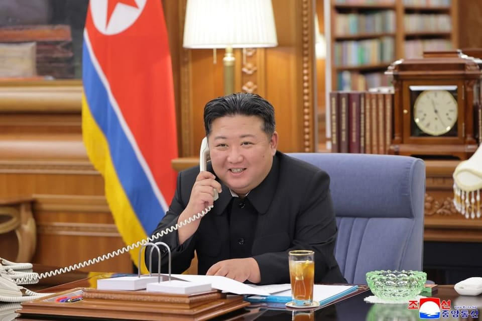

世界苦茶08月13日新闻 | 39条 | 中國勸阻國內企業不要使用H20芯片

中國勸阻國內企業不要使用H20芯片 | 美國勞工部延長就業數據公佈週期 | 英國遭遇半世紀最嚴重乾旱 | 賴清德大罷免後聲望下滑 | 尹錫悅夫婦同時羈押韓國首次
歡迎關注SUBSTACK
每日三條新聞解析
苦茶数据
美元兑人民币：7.18（昨日7.19，前日7.18）
美元兑日元：147.92（昨日148.43，前日147.82）
上证指数：3685（昨日3666，前日3635）
标普500指数：6445（昨日6373，前日6389）
比特币：119413（昨日118943，前日119026）
布伦特原油：66.23（昨日66.82，前日66.11）
中国新闻
• 中印拟下月恢复直航 ：了解相关磋商的知情人士说，印度和中国最早将于下个月恢复直航，因为这两国正寻求重置政治关系。彭博社引述知情人士报道，印度政府已要求印度航空公司尽快准备飞往中国的航班，官方公告最早可能会在8月底于中国举行的上海合作组织峰会上发布。冠病疫情暴发后，印度和中国之间的客运航班暂停，迫使这两国的旅客不得不经由香港或新加坡等枢纽中转。重新启动恢复直航的努力之际，印度与美国的关系正面临巨大压力。此前，美国总统特朗普将印度商品的关税提高一倍至50%，以惩罚印度购买俄罗斯石油。
• 广州13家机构防蚊不力被罚 ：中国广州荔湾区13家机构未落实病媒生物防制管理措施，导致蚊虫孳生而被罚。根据中共广州荔湾区委宣传部星期一在微信微信公众号发布的通报，荔湾区卫生健康局组织卫生监督执法人员对公共场所、人群密集等重点区域、重点场所开展蚊媒防控督导，切实压实各方责任，对防控不力、违反相关法律法规的单位和个人，依法予以处理。荔湾区卫生健康局已对上述13家机构实施了行政处罚。荔湾区卫生健康局在通报中公布了两起典型案例。在其中一起案例中，卫生健康局执法人员在对某驾校公司进行监督检查时，发现驾校公司的停车场堆放很多汽车轮胎，轮胎内壁形成积水，并有孑孓游动，周围可见成蚊。
• 非深户学龄前可参保深圳医保 ：中国深圳市官方通报，非深户籍学龄前儿童从9月起，可参加深圳居民医疗保险。中国央视新闻星期二引述深圳市医疗保障局消息报道，自今年9月1日起，符合条件的非深圳户籍学龄前儿童可参加深圳居民医保，预计每年将有约10万名儿童受益。按照规定，在深圳居住、未在园在校且未参加其他地区医保的七周岁以下、非深户籍学龄前儿童，只要父母一方持有有效深圳经济特区居住证、深圳签发的有效港澳台居民居住证，或父母一方为深圳户籍居民，即可申请参保。已参加异地医保的儿童需先办理停保手续，避免重复参保影响待遇享受。
• 意大利运动员成都比赛中去世 ：在中国四川省成都市举行的世界运动会期间，一名意大利徒步定向运动员离世。国际世界运动会协会、成都世运会组委会、国际定向运动联合会星期二联合发布公告称，意大利徒步定向运动员马蒂亚·德贝托利斯在成都世运会比赛期间昏迷入院，经抢救无效不幸离世，年仅29岁。公告称，德贝托利斯于8月8日上午在定向男子中距离比赛中昏迷。经中国专业医疗机构专家救治，终因抢救无效于8月12日不幸离世。
• 企业招退休人员登热搜 ：中国社保强制缴纳政策9月1日起生效，一些企业招聘退休人员的新闻登上微博热搜榜。据《大河报》报道，记者在中国老年人才网注意到，北京环球影城发布零售服务人员招聘信息。招聘条件要求为正式退休人员，拥有初中以上学历，岗位工作班次会频繁变换，每个班次4~8小时，薪资待遇为30元人民币/小时，能够接受长时间站立工作。另据第一财经报道，有麦当劳门店也打出宣传语“退休员工招募中”，任职要求为：每周可上班至少三天、提前退休及达到退休年龄，享有国家法定假日三倍工资、周六免费餐饮及员工打折福利、享受保险。
• 中国驳斥美巴拿马运河指控 ：中国常驻联合国代表傅聪在联合国安理会的公开辩论会上，驳斥美国在巴拿马运河问题上对中国的指责抹黑。据新华社报道，傅聪星期一在联合国安理会海上安全问题高级别公开辩论会上说，近一段时间，美国代表团多次在安理会借各种议题对中国进行无理指责和抹黑，中方对此坚决反对。他指出，中方一贯尊重巴拿马对运河的主权，承认巴拿马运河作为永久中立国际水道的地位。美方炮制谎言、无端攻击中国，无非是为它控制巴拿马运河制造借口。中方坚决反对经济胁迫和霸凌行径，敦促美方停止造谣生事。
• 中联部会见多米尼克大使 ：中共中央对外联络部副部长马辉上星期五在北京会见新任拉美和加勒比国家驻华使团团长、多米尼克驻华大使马丁·查尔斯。中联部官网星期一发布这项消息，并称双方就中拉、中多关系及党际交往等双方共同关心的问题交换了意见。 （翻評：也說明劉建超可能真的出事兒了。）
亚太印太新闻
• 韩国前总统夫妇同被羁押 ：韩国法院星期二晚签发前总统尹锡悦夫人金建希的逮捕令，为韩国宪政史上前总统夫妇同时被羁押首例。韩联社报道，首尔中央地方法院12日白天对金建希进行了约四个小时的逮捕前讯问、即逮捕必要性审查，于12日深夜签发逮捕令，理由是“担心嫌疑人销毁证据”。金建希在讯问结束后被送至首尔南部拘留所，法院批捕后，被当场收押。负责调查金建希弊案的独立检察组8月7日以涉嫌违反《资本市场法》、《政治资金法》以及《特定犯罪加重处罚法》为由，提请法院批捕金建希。这三项指控分别与德意志汽车公司股价操纵案、政治掮客介选案、宗教人士请托案有关。
• 台湾回应洪都拉斯邦交可能 ：台湾外交部星期二谈及台湾与中美洲国家洪都拉斯的关系时说，会秉持符合台湾利益与尊严的原则，来探讨未来发展关系的可能。综合《自由时报》和台湾中央广播电台报道，台湾外交部发言人萧光伟在记者会上就数名洪都拉斯总统候选人据报支持恢复与台湾之间的邦交，做出上述回应。英文杂志《外交家》上星期六在网站刊登评论文章称，11月举行的洪都拉斯总统选举，让台湾有可能迎接近20年来首个新外交伙伴。
• 联合国指缅甸系统性酷刑 ：联合国调查人员称，已发现缅甸安全部队系统性实施酷刑的证据，并确认了部分处于高位的施暴者身份。联合国人权理事会于2018年成立的缅甸独立调查机制星期二发布报告称，在缅甸拘留设施中的受害者遭受了殴打、电击、勒颈以及其他形式的酷刑，包括被人用钳子拔掉指甲。IIMM的负责人库姆吉安发声明说：“我们发现了大量证据，包括目击者证词，显示缅甸拘留设施中存在系统性酷刑。”
• 泰国士兵踩地雷受伤 ：泰国再有一名士兵在泰柬边境地区巡逻时踩中地雷受伤，军方称可能会行使自卫的权利。综合路透社与《曼谷邮报》报道，泰国军方星期二发布声明说，这名士兵在泰国素林府靠近古庙达莫托寺约一公里处的例行巡逻路线上踩到地雷，导致左脚踝严重受伤，目前正在医院接受治疗。军方发言人温泰少将在声明中指，这起事件是柬埔寨违反停火协议以及《渥太华公约》的确切证据。
• 台湾女立委被指与住持关系密切 ：台湾媒体报道称，民进党籍高雄市立委林岱桦与助她竞选立委的通法寺住持释煌智交往甚密，林岱桦办公室发声明称，是暗黑势力抹杀人格。台湾《镜周刊》星期二引述法院卷证报道，林岱桦与释煌智关系密切，释煌智不仅在公事上俨然如林岱桦的地下总干事，掌握金流、经费核销及人事大权，两人私下互动、对话更“超乎一般人交情”。综合台湾中天新闻网、FTNN新闻网报道，林岱桦办公室当天发声明回应时，指起诉事实与媒体爆料毫无关连，这是特定暗黑势力结合检调与媒体，以不明资料，对女性政治工作者进行羞辱式的人格毁灭战，既恶质且凶狠，应予严厉谴责。
• 曼谷艺术中心撤展引外交风波 ：泰国曼谷艺术文化中心此前应中国大使馆要求，撤下有关少数民族和香港的展览作品。中国外交部星期一指责上述展览组织者歪曲西藏、新疆和香港政策。根据路透社报道，这项展览名为“共谋星座：全球威权主义团结机制的视觉呈现”，于7月24日开幕。8月初一些之前宣传和拍摄的作品被撤下，其中包括一名西藏艺术家创作的多媒体装置；其他作品被修改，“香港”“西藏”和“维吾尔”等字样以及艺术家名字被隐去。
• 台湾总统赖清德声望下滑 ：台湾民意基金会最新民调结果显示，总统赖清德声望跌剩逾三成，连他主政过的台南也失守。综合ETtoday新闻云和中时新闻网报道，台湾民意基金会星期二公布最新民调的结果显示，33.3%受访民众赞同赖清德总统上任一年多以来处理“国家”大事的方式，包括重要人事安排与政策，54.4%表示不赞同。和上个月相比，“总统职务表现赞同率”下滑9.6个百分点；同时，“总统职务表现不赞同率”上升9.9个百分点，意味着赞同赖赖清德处理“国家”大事方式的人数下滑9.6个个百分点，不赞同的人数飙升9.9个百分点。这一来一往，使得不赞同他领导台湾方式的人数比赞同的人数多21.1个百分点。
科技新闻
• 中方盼美保障晶片供应链 ：中国外交部说，希望美国采取切实行动，维护全球晶片供应链的稳定和畅通。中国外交部星期二在回答有关美国总统特朗普暗示，他可能会允许美国晶片巨头英伟达在中国销售简化版的下一代先进GPU晶片的问题时说，希望美国采取切实行动，维护全球晶片供应链的稳定和畅通。美国政府上月撤销针对英伟达向中国销售H20晶片的禁令，特朗普星期一为此决策辩护说，中国早就拥有H20，并指“H20已经过时！”
• 中方劝阻用英伟达H20晶片 ：中国据报已敦促国内企业避免使用美国晶片巨头英伟达的H20晶片，尤其是用于政府相关用途。彭博社星期二引述知情人士报道，过去几周，中国有关部门已向多家公司发出通知，劝阻它们使用这种技术含量较低的晶片。知情人士说，相关指导方针特别强烈地禁止国有企业或私营公司将H2O用于任何与政府或国家安全相关的工作。一名知情人士说，除了英伟达之外，北京的整体举措还影响到超微半导体公司的人工智能加速器，不过目前尚不清楚是否有任何信件具体提到了超微的MI308晶片。
• 权道亨承认加密货币欺诈罪 ：当地时间周二，声名狼藉的前加密货币产业大亨权道亨在纽约联邦法院对两项欺诈指控认罪。现年33岁的权道亨创立了算法稳定币TerraUSD和关联姊妹币Luna。在2022年05月的崩盘中，短短一周内市值就蒸发超400亿美元，并引发了“加密货币寒冬”。权道亨2023年03月在黑山试图使用假护照搭乘私人飞机前往阿联酋时被捕，黑山当局去年12月将权道亨移交给美国。据悉，权道亨与检方达成了一项认罪协议，他承认一项串谋罪和一项电汇欺诈指控，换取检方放弃其余七项罪名的指控。检方表示，根据协议，他们将寻求不超过十二年的刑期。
• 特斯拉Robotaxi将全面开放 ：特斯拉首席执行官埃隆·马斯克证实，公司旗下Robotaxi平台将向公众开放服务，并确定这项服务将于明年全面普及。据悉，特斯拉的Robotaxi平台于 6月22日在得州奥斯汀面向小范围用户启动。过去的一个半月，特斯拉持续扩大服务用户规模及地理围栏覆盖范围，并在加州湾区同步推出服务。随着服务区域和测试人群的扩大，特斯拉用户正等待获得平台使用权限的邀请邮件。现在看来电子邮件将很快到来，马斯克在社交媒体 X 宣布：“Robotaxi下月将开放公众使用权限。”
• Perplexity想买下30亿用户的Chrome浏览器： 美国AI初创公司 Perplexity AI 确认，已向谷歌母公司 Alphabet发出 Chrome浏览器的收购要约，报价达到345亿美元。Perplexity并未披露公司将如何筹措收购资金。需要指出的是，这一报价虽然数额不高，但已颇具冒险意味，且所需融资将远超这家初创公司的自身估值。一位知情人士透露，多家基金已提出愿意全额资助该交易，但未透露基金名称。如果能收购，Perplexity将能利用该浏览器逾30亿用户的庞大基础，在AI搜索竞赛中占得先机。Perplexity在收购提议中承诺保持浏览器核心代码Chromium的开源属性，两年投资30亿美元并且不更改默认搜索引擎。 （翻評：30億買一個用戶入口。）
财经新闻
• 特朗普8月11日提名的劳工统计局局长E.J.安东尼8月12日建议该机构暂停发布月度就业报告： 他声称该报告不靠谱且经常被夸大，劳工统计局应在修订后公布季度数据，直到月度就业数据更加准确。 （翻評：哈？！勞工統計是美國宏觀經濟最重要的數據，可以說沒有之一，該數據頻次由1月1次，到一季度一次，是美國經濟透明度的重大挫折。）
• 中国恒大将于8月25日退市 ：清盘中的中国恒大集团将在8月25日从港交所退市。代表恒大的清盘人星期二在公告中说，股份上市的最后一天为8月22日，并将于8月25日上午9时起取消股份上市地位。根据发布在香港交易所网站的公告，取消上市地位后，清盘人拟在适当情况下在清盘资讯网站上，公布有关公司清盘的重大进展通知。
• 美中经贸团队拟再会谈 ：美国财政部长贝森特说，美国贸易谈判团队将在两三个月内再次与中国代表会面，讨论两国未来经济关系。路透社报道，贝森特星期二接受福克斯商业频道访问时透露这个消息，他也说中国国家主席习近平邀请特朗普总统访华，但尚未有安排。贝森特说：“没有日期，总统还没有答应。”
• 中国出台服务业贷款贴息政策 ：中国财政部等九部门印发《服务业经营主体贷款贴息政策实施方案》，服务业经营主体单户享受贴息的贷款规模最高可达100万元人民币。根据中国财政部网站消息，中国财政部、民政部、人力资源社会保障部、商务部等九部门发文，为贯彻落实中共中央和国务院关于大力提振消费、全方位扩大国内需求的决策部署，根据相关行动方案对符合条件的消费领域服务业经营主体贷款给予财政贴息的要求，制定本实施方案。方案指出，同时符合以下条件的贷款可享受贴息政策：一是由经办银行向餐饮住宿、健康、养老、托育、家政、文化娱乐、旅游、体育八类消费领域服务业经营主体发放。二是在《提振消费专项行动方案》公开发布之日至2025年12月31日期间签订贷款合同且相关贷款资金发放至经营主体。三是贷款资金合规用于改善消费基础设施和提升服务供给能力。
• 终止对印度卤化丁基橡胶反倾销 ：中国商务部公告，决定终止对原产自印度的进口卤化丁基橡胶进行反倾销调查。中国商务部星期二在官网公告，去年9月14日根据《中华人民共和国反倾销条例》规定，决定对原产于加拿大、日本和印度的进口卤化丁基橡胶进行反倾销立案调查。经调查，自印度进口的卤化丁基橡胶在调查期内占同期中国进口卤化丁基橡胶总量的比例低于3%。根据《反倾销条例》规定，调查机关认定该进口数量属可忽略不计，决定终止对原产于印度的进口卤化丁基橡胶的反倾销调查。 （翻評：給印度一點甜頭。）
• 对加拿大豌豆淀粉反倾销立案 ：中国星期二起对原产于加拿大的进口豌豆淀粉进行反倾销立案调查。中国商务部新闻发言人说，此次调查与加拿大近期对中国采取的歧视性措施有本质区别。中国商务部发布公告称，在今年6月26日收到烟台双塔食品股份有限公司等六家公司代表中国豌豆淀粉产业正式提交的反倾销调查申请，申请人请求对原产于加拿大的进口豌豆淀粉进行反倾销调查。 （翻評：給加拿大一點顏色。）
• 特朗普称黄金不征关税 ：美国总统特朗普星期一下午在社媒平台发文称，黄金将不会被征收关税。受这一消息影响，纽约商品交易所黄金期货价格当天下跌超过2%。由于市场推测美国海关与边境保护局将对进口的1公斤和100盎司金条征收关税，对黄金期货交割可能受到影响的担忧刺激黄金期货价格在日前显著上涨并创下历史新高。
• 中方暂停对美部分实体措施 ：中国官方星期二宣布，为落实中美经贸高层会谈共识，暂停对4月列入不可靠实体清单的17家美国实体实施措施，同时暂停对28家美国实体的出口管制措施。据中国商务部官网消息，商务部新闻发言人以答记者问形式说，根据《中国反外国制裁法》《不可靠实体清单规定》及有关规定，不可靠实体清单工作机制于今年4月4日和9日，将17家美国实体列入不可靠实体清单，禁止这些企业从事与中国有关的进出口活动，以及在中国境内新增投资。
俄乌战争
• 欧盟会晤前声明挺乌克兰 ：欧盟领导人在美国总统特朗普和俄罗斯总统普京会晤前发布联合声明，强调乌克兰人民必须拥有决定自身未来的自由，外交解决方案必须维护乌克兰和欧洲的利益。法新社报道，26位欧洲国家元首和政府首脑于星期一晚上对联合声明达成一致，并于星期二发布，得到除匈牙利以外所有欧盟成员国领导人的认可。声明说，“欧盟领导人欢迎特朗普总统为结束俄罗斯对乌克兰的侵略战争，以及为乌克兰实现公正和持久的和平与安全所做努力。”
• 俄方盼美俄关系正常化 ：俄罗斯方面希望即将举行的俄美领导人会晤能推动两国关系正常化。塔斯社星期二报道，俄罗斯外交部副部长里亚布科夫接受媒体采访时说，希望此次会晤能为俄美关系正常化提供新动力，包括恢复两国间直飞航班问题。里亚布科夫说，在向俄方返还俄在美外交资产方面，目前尚未有任何进展。据悉，此前俄罗斯在美国的一些外交机构已被关闭。
• 俄愿助亚阿关系正常化 ：俄罗斯总统普京星期一与亚美尼亚总理帕什尼扬通电话，表明愿意帮助亚美尼亚与阿塞拜疆关系实现全面正常化。根据俄罗斯总统网站消息，帕什尼扬在通话中向普京详细介绍8日在美国首都华盛顿与美国总统特朗普、阿塞拜疆总统阿利耶夫会晤的结果。普京说，采取措施确保亚美尼亚与阿塞拜疆之间持久和平至关重要，俄罗斯愿意协助推进这一进程。普京也向帕什尼扬介绍了他6日与美国中东问题特使威特科夫会晤结果，以及与特朗普15日在美国阿拉斯加州会晤的准备情况。
• 特朗普称与普京会谈摸底 ：美国总统特朗普淡化外界对他与俄罗斯总统普京会谈的期待，称这是一场“摸底会谈”，他将在会谈结束后与乌克兰和欧洲领导人磋商。综合彭博社和法新社报道，特朗普在星期一的白宫新闻发布会说：“我们要知道他有什么想法，如果是一个公平协议，我会向欧盟领导人、北约领导人以及泽连斯基总统公开。”特朗普说，他会告诉普京，“你必须结束这场战争，你必须这么做。”
• 美俄会晤前欧美将视频会商 ：德国政府消息显示，美俄首脑本周会晤前，德法英等欧洲国家、北约和欧盟的领导人，以及乌克兰总统泽连斯基，计划在星期三同美国总统特朗普举行视频会议。新华社报道，德国政府发言人科内柳斯星期一发表声明说，德国总理默茨拟邀请特朗普、泽连斯基、北约秘书长吕特、欧盟委员会主席冯德莱恩及法国总统马克龙、英国首相斯塔默等欧洲国家领导人参加这场会议，讨论乌克兰局势。据欧洲新闻电视台报道，德法英领导人将主持这场紧急会议。预计意大利、波兰、芬兰领导人和欧洲理事会主席科斯塔也将参会。
• 普京8月12日与金正恩通电话。双方高度评价各领域按照两国条约精神进一步深入发展，并重申了今后加强合作的意志： 金正恩承诺，朝鲜将全面支持俄罗斯领导班子采取的一切措施。普京再次赞赏朝鲜在解放库尔斯克的过程中提供的支援，并对朝鲜即将迎来“祖国解放”80周年表示祝贺。两国领导人还就普京即将与特朗普举行会晤等事宜进行了沟通。双方商定今后保持密切沟通。
国际新闻
• 以军称加沙作战进入新阶段 ：以色列国防军总参谋长扎米尔说，以军在加沙地带的作战进入“新阶段”。新华社报道，扎米尔星期一主持以色列国防军战备状态局势评估会，会议旨在拟定以军年度工作计划。他在会上说，按照以色列安全内阁的决定，“我们正处于加沙作战新阶段的开始”。以军将制定符合既定目标的最佳方案，将尽一切努力保护人质生命并把他们安全带回家。扎米尔还说，正如过去在加沙地带南部汗尤尼斯和拉法地区那样，“以军能够实现对加沙城的作战控制”，他说，以军“曾在那里开展过地面行动，我们能再次做到”。扎米尔表示当前局面前所未有，以军必须“为战事扩大做好准备”。
• 以军加大空袭加沙致49死 ：加沙民防机构称，以色列近日加大了对加沙的空袭力度，而单是星期二就有至少49人在冲突中丧命。法新社报道，加沙民防机构发言人巴萨尔星期二说，过去三天，以军不断加大对加沙城的空袭力度。巴萨尔也向新华社控诉，指以色列正毫无预警并系统性地轰炸民宅。
• 英格兰陷干旱创近半世纪最低 ：英国环境局说，英格兰今年上半年的降雨量为1976年以来同期最低水平，“国家干旱小组”已将英格兰当前的缺水情况定义为“国家重大事件”。法新社报道，英国环境局星期二发布声明说，英格兰五个地区正式陷入干旱，另有六个地区在经历了自1976年来最干旱的上半年后，持续处于干燥天气中。与6月相比，英格兰许多河流流量和水库水位7月有所下降。上周，英格兰的水库水位下降了2%，目前平均蓄水量为67.7%，而往年8月第一周平均值为80.5%。
• 欧洲热浪多国拉响红警 ：欧洲多国周一持续遭受极端热浪侵袭，法国、意大利等国相继发布红色高温预警，预计高温天气将持续至下周。在意大利，一名四岁男童中暑身亡。事发时，意大利卫生部已对包括博洛尼亚、佛罗伦萨在内的七座主要城市发布红色预警，预计周二将有11座城市进入红色预警，周三增至16座。法国正经历今夏第二波热浪，周一已将12个省份列为最高级别红色预警，预计周二将再增加四个省份。西南部城市波尔多气温飙至41.6摄氏度，创下历史新高，另有四处气象站也刷新纪录；气象部门预计，这波热浪将持续至8月19日或20日。
• 加拿大山火季已创历史新高，专家警告“新现实”： 数百起山火失控燃烧，加拿大2025年的山火季已创历史新高。科学家报告称，气候变化正在延长和加剧山火，导致更多破坏、人员疏散和浓烟弥漫的天空。据加拿大跨部门森林火灾中心称，目前全国已有超过470起山火被列为“失控”。根据CIFFC的最新数据，今年加拿大因山火烧毁的土地面积已达7,318,421公顷，比五年平均水平4,114,516公顷高出近78%。2025 年的火灾季仅次于 2023 年的山火季，后者造成了惊人的 17,203,625 公顷的过火面积。
• 特朗普称英特尔总裁成功非凡 ：美国总统特朗普与英特尔总裁陈立武会面后，称陈立武的成功故事“非凡”，并表示陈立武未来几天将继续与内阁成员进行讨论。彭博社报道，特朗普星期一在白宫与陈立武会面后在社媒平台贴文写道：“这次会面非常有意思。他的成功和崛起是一个了不起的故事。陈先生将和我的内阁成员开会，并在下周向我提出建议。”特朗普这番热情言论与几天前的态度形成鲜明对比，特朗普上周要求陈立武立即辞职，称他与中国企业的关系构成严重利益冲突，并对他能否扭转陷入困境的英特尔表示怀疑。 （翻評：幾天一個一百八十度翻轉。）